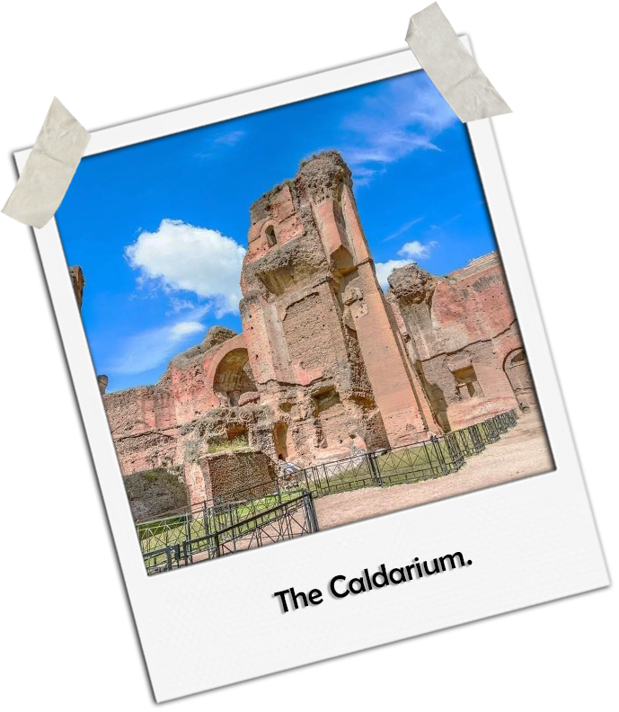
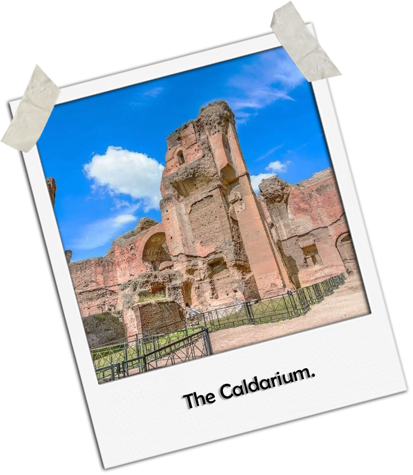
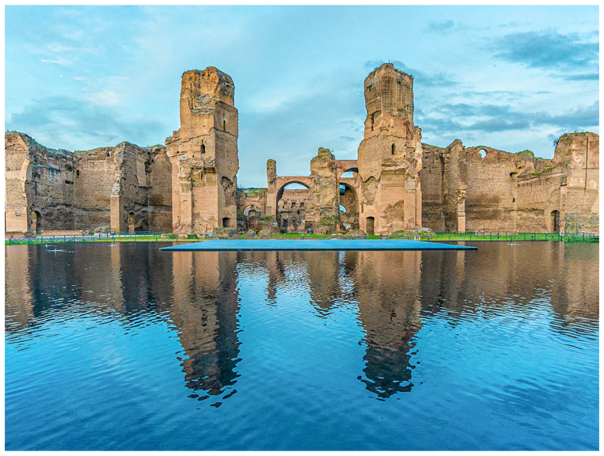
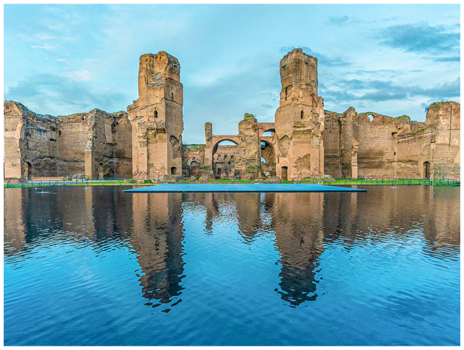
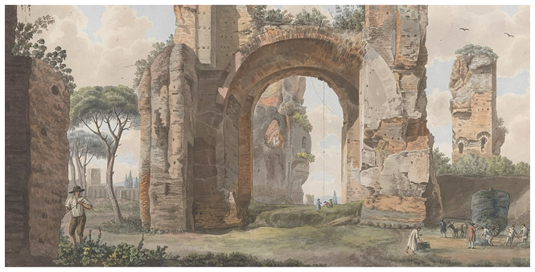
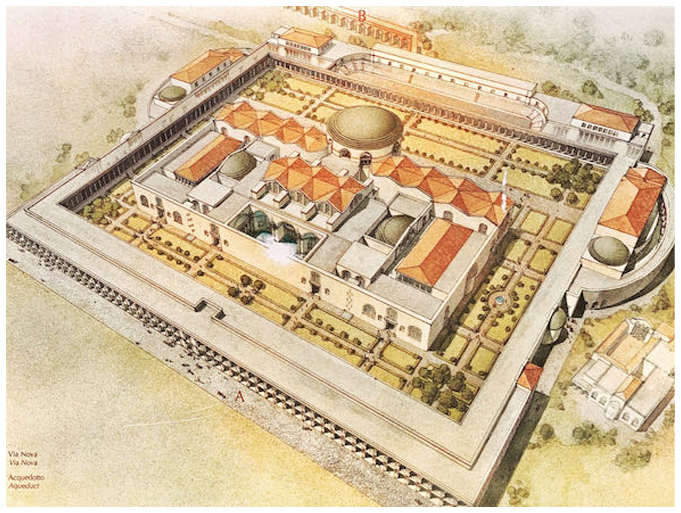

 

HOW IT WAS BUILT
The Baths of Caracalla were constructed during the early third century AD. Work began under Emperor Septimius Severus and was completed by his son, Caracalla, in 216 AD.
The massive structure was built using brick, concrete, marble, and granite. Concrete formed the structural core, allowing for vast interior spaces.
The heating system relied on a vast hypocaust network, where furnaces heated air that circulated through raised floors.
After completion, the baths covered more than twenty-five hectares and could host several thousand visitors at once.


 Click to see more info
Click to see more info